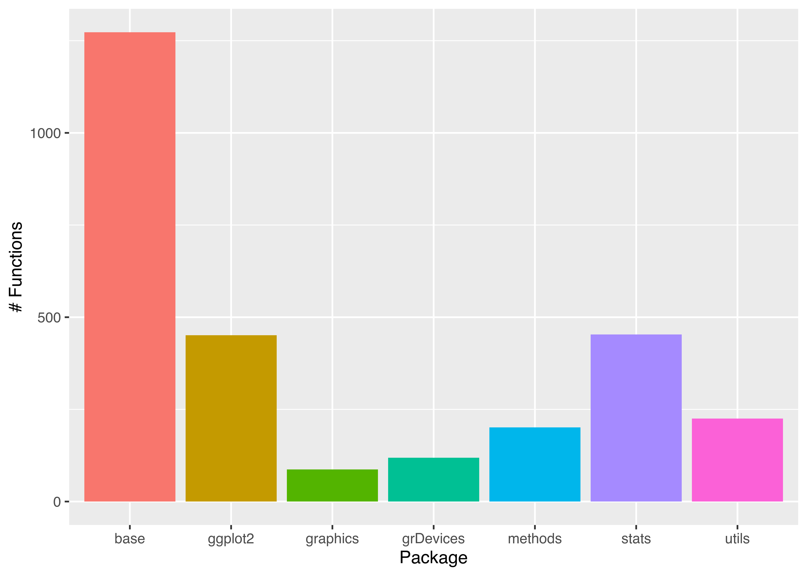
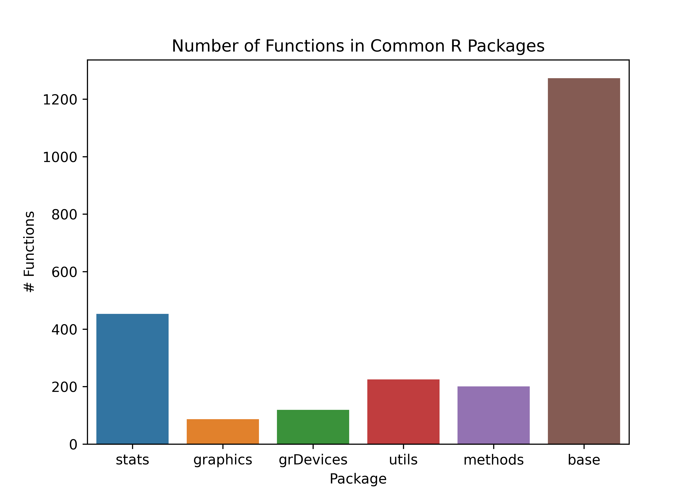

# Define a vector of numbers
x <- c(1, 2, 3, 4, 5)
# Calculate the maximum
max(x)
## [1] 5
# function to repeat a variable multiple times
rep("test", 3)
## [1] "test" "test" "test"
# Concatenate strings, using "ing... " as the separator
paste(rep("test", 3), collapse = "ing... ")
## [1] "testing... testing... test"10 Functions, Packages, and Environments
In addition to variables, functions are extremely important in programming. Functions allow you to repeat a series of steps using different information and get the result. In a way, a function is to a variable as a verb is to a noun - functions are a concise way of performing an action.
Packages contain groups of functions to accomplish tasks. In order to use functions from a package, you must install the package, and load it.
Environments are important for managing the set of installed packages that is available to use in a project. Environment management is different in R than it is in Python, and for a beginner, the R approach requires a bit less thought. For now, you will pick one Python environment management option and stick with it – later, you may develop opinions on which approach is useful for different tasks.
Objectives
- Use pre-written functions to perform operations
- Use python environments to manage packages
- Install and load packages in R and Python
- Use pipes to write readable code
TLDR
- Functions are discrete blocks of code that execute a sequence of steps.
- Functions take arguments as parameters and return values
- Packages contain functions that are connected by a common goal or task sequence.
- Packages must be installed and loaded in order for the functions in the package to be used.
- Environments manage the available packages and functions that can be loaded and used.
- In R, a pipe
|>can be used to chain functions together in a more readable way.
10.1 Using Functions
Functions are sets of instructions that take arguments and return values. Strictly speaking, mathematical operators (like those above) are a special type of functions.
We’re not going to talk about how to create our own functions just yet. Instead, in this chapter, let’s figure out how to use functions.
Cheat Sheets!
It may be helpful at this point to print out the R reference card1 and the Python reference card.2 These cheat sheets contain useful functions for a variety of tasks in each language.
10.1.1 Function Vocabulary
Suppose I have a function called add(x, y) which takes two numbers and adds them together.
In this example, add is the function name, and x and y are parameters: placeholder names for information to be passed into the function. Not all functions have named parameters, but it is common for named parameters to provide some indication of what information is supposed to go in that spot.
When I call the function – that is, I use it to add two numbers together, I have to pass in arguments. Arguments are values which are assigned to parameters in the function and affect the result.
This is technical and a bit nit-picky, but it’s good to see information multiple times. We’ll revisit functions in sec-functions, when we discuss how to write our own functions.
The function call is add(x = 3, y = 2), where 3 and 2 are the arguments. The function call is evaluated and returns 5 as the answer (assuming that add does what it says it does).
Function Vocabulary in Help Files
Let’s see these words in a more concrete setting.

which.max and which.min functionswhich.maxandwhich.minare the function namesxis the parameter
When I type which.max(x = c(2:10)) into the R console and hit Enter,
c(2:10) = c(2, 3, 4, 5, 6, 7, 8, 9, 10)is the argument- inside
which.max, this argument has the namex(mostly helpful for debugging) which.maxwill return 9, which is the index ofxwith the largest value (10)
Methods are a special type of function that operate on a specific data type. In Python, methods are applied using the syntax variable.method_name(). So, you can get the length of a string variable my_string using my_string.length().
R has methods too, but they are invoked differently. In R, you would get the length of a string variable using length(my_string).
Right now, it is not really necessary to know too much more about functions than this: you can invoke a function by passing in arguments, and the function will do a task and return the value.
Your Turn: Cheat Sheet Exploration and Using Functions
Try out some of the functions mentioned on the R and Python cheat sheets.
Can you figure out how to define a list or vector of numbers? If so, can you use a function to calculate the maximum value?
Can you find the R functions that will allow you to repeat a string variable multiple times or concatenate two strings?
Can you do this task in Python?
# Define a list of numbers
x = [1, 2, 3, 4, 5]
# Calculate the maximum
max(x)
## 5
# Repeat a string multiple times
x = ("test", )*3 # String multiplication
# have to use a tuple () to get separate items
# Then use 'yyy'.join(x) to paste items of x together with yyy as separators
'ing... '.join(x)
## 'testing... testing... test'10.1.2 Using R and Python as Overpowered Calculators
Now that you’re familiar with how to use functions, if not how to define them, you are capable of using R or python as a very fancy calculator. Obviously, both languages can do many more interesting things, which we’ll get to, but let’s see if we can make R and Python do some very basic stuff that hopefully isn’t too foreign to you.
Demonstration: Triangle Side Length

Consider this triangle. I’ve measured the sides in an image editor and determined that \(a = 212\) pixels, \(b = 345\) pixels, and \(c = 406\) pixels. I suspect, however, that my measurements aren’t quite right - for one thing, I tried to measure in the center of the line, but it wasn’t as easy to do that well on the diagonal.
Let’s assume that my measurements for \(a\) and \(b\) are accurate and calculate how far off my estimate was for side \(c\). We will use the sqrt function to accomplish this task – in R, sqrt(), and in Python, math.sqrt(). In Python we need to run import math first to load the math library before we can use the math.sqrt function.
a <- 212
b <- 345
c_meas <- 406
c_actual <- sqrt(a^2 + b^2)
pct_error <- (c_meas - c_actual)/c_actual * 100
pct_error
## [1] 0.2640307- 1
- Define variables for the 3 sides of the triangle
- 2
- Calculate what side \(c\) should be, according to the Pythagorean Theorem
- 3
- Calculate the percent error between the measured and actual value
import math
a = 212
b = 345
c_meas = 406
c_actual = math.sqrt(a**2 + b**2)
pct_error = (c_meas - c_actual)/c_actual * 100
pct_error
## 0.264030681414134- 1
-
Import the
mathpackage to make thesqrtfunction available - 2
- Define variables for the 3 sides of the triangle
- 3
- Calculate what side \(c\) should be, according to the Pythagorean Theorem
- 4
- Calculate the percent error between the measured and actual value
Interesting, I wasn’t as inaccurate as I thought!
Your Turn: Defining Variables and Using Functions
Of course, if you remember trigonometry, we don’t have to work with right triangles. Let’s see if we can use trigonometric functions to do the same task with an oblique triangle.
Just in case you’ve forgotten your Trig, the Law of Cosines says that \[c^2 = a^2 + b^2 - 2 a b \cos(C),\] where \(C\) is the angle between sides \(a\) and \(b\).

I measure side \(a = 291\) pixels, side \(b = 414\) pixels, and the angle between \(a\) and \(b\) to be \(67.6^\circ\). What will I likely get for the length of side \(c\) in pixels?
Remember to check whether R and python compute trig functions using radians or degrees! As a reminder, \(\pi\) radians = \(180^\circ\).
# Define variables for the 3 sides of the triangle
a <- 291
b <- 414
c_angle <- 67.6
c_actual <- sqrt(a^2 + b^2 - 2*a*b*cos(c_angle/180*pi))
c_actual
## [1] 405.2886I measured the length of side \(c\) as 407 pixels.
# To get the sqrt and cos functions, we have to import the math package
import math
# Define variables for the 3 sides of the triangle
a = 291
b = 414
c_angle = 67.6
c_actual = math.sqrt(a**2 + b**2 - 2*a*b*math.cos(c_angle/180*math.pi))
c_actual
## 405.28860699402117I measured the length of side \(c\) as 407 pixels.
Congratulations, if you used a TI-84 in high school to do this sort of stuff, you’re now just about as proficient with R and python as you were with that!
10.2 Environments
You may have noticed in the Python example above, we had to import math before we used the math.sqrt() and math.cos() functions. The math package is a built-in package in Python, so we don’t have to install the package in order to use it (installing Python installs math). But, before we can use math.sqrt(), we have to import or load the math package into our working space. In Python, this working space is called the object space; in R, it’s called the global environment. The terminology here differs between R and Python (which is confusing), but conceptually, it’s important to distinguish between the set of things that are available to use when you are writing a program and the set of things that are available to load.
10.2.1 Advanced: Why environments?
Imagine that you’re an accomplished programmer, and you are juggling multiple different projects. Each project uses some of the same packages, but some different packages as well. You open up a project that you haven’t run in a year, and you find out that one of the packages you’ve updated more recently breaks a bunch of code you wrote a year ago, because the functions in the package have been renamed.
What could prevent this from happening?
One way to solve this problem is to store the packages used in each project inside the project directory, in what we might call a project environment or virtual environment. This will keep each project isolated from the others, so that if you update a package in one project, it doesn’t affect any other project.
However, this approach results in a lot of duplication: for one thing, you have copies of each package hanging around in every folder on your computer. That’s not storage efficient, but it does keep your code from breaking as frequently.
Python programmers prefer the project-specific approach, while R programmers default to installing packages at the user or system level.
10.2.2 Vocabulary by Analogy: Functions, Packages, Environments, and Repositories
Think of a package as a book, with each page of the book containing a specific function.
The package repository (CRAN, PyPi, etc.) is a set of packages, roughly corresponding to a physical library or a bookstore - you can access the packages and install them (take them home). Unlike a physical library, though, usually you don’t have to return the packages you’ve checked out!
The set of packages you have installed corresponds to the books you have at home. You can use any of the functions (pages of those books) when you want to program (or access information).

Image Source
{kind=link}


How the packages are organized can reasonably differ based on how you prefer your house to be arranged, just as package organization differs significantly in R and Python.
Python virtual environments arrange packages by project location, so that the package versions needed for each project are stored together, and other projects may have different versions.
Analogy: Books in my house are sorted by task and audience (programming books at my desk, fiction books near the couch, kid books in their bedrooms).R packages, by default, are installed in user libraries or system wide, and the same package version is used for all projects.
Analogy: All books in the house are kept in a single wall-to-wall set of bookshelves in the living room.
The global environment (R) or object space (Python) is the collection of objects (functions, variables, etc.) that are immediately available to the user.
Regardless of how packages are managed (virtual environments or centrally), to access the package’s functions, I have to go get the book and open it. This step corresponds most closely to loading a package into your global environment/object environment.
Again, R and Python prefer to manage this step differently.
In R, functions from all loaded packages are available to the user directly using the function name. When multiple packages with lots of functions are loaded, this can be … messy, as in Figure fig-env-mgmt-R.
In Python, the recommended way to load packages is to import the package and possibly give it a shorter alias; the functions must still be referenced as
pkg.functionNameoralias.functionNameinstead of justfunctionName. This more closely matches Figure fig-env-mgmt-py, where pages are still contained in notebooks, and thus require an extra step to access.

Image source

Image source
{kind=link}
Advanced: Python-like R environments
Some R programmers have adopted the python philosophy of project-specific package management, using an R package called renv [1].
renv documentation can be found here if you wish to try it out. I find that it is most useful for projects where package updates may break things - e.g. projects which run on shared systems or which are intended to work for a long period of time without maintenance.
If you want to use renv, you can do that by following these steps:
install.packages("renv")
library(renv)
# Activate renv for a project
renv::activate()
# this will install from github or CRAN
renv::install(c("pkg1", "pkg2", "githubuser/pkg3")) I use renv for this textbook, because if a package update breaks things, I need to systematically check all the code chunks in the textbook to make sure they all work. I don’t want to do that every time someone fixes a minor bug, so I don’t update the packages the textbook uses more than once a semester (normally).
10.2.3 Python Environments
In Python, packages are usually managed at the project level by creating virtual environments. The different environment management options in Python are one of the things that can make starting to learn python so difficult - it can be hard to make sure you’re using the right environment. virtualenv and conda are the main options for environment management. conda is sometimes preferred for scientific computing because it handles the complex dependencies that arise from large packages like numpy and scipi and pandas a bit better than pip does alone.
By default, sec-setting-up just installs python at the system level.
Decision Fatigued?
If you don’t care about the nuances of which python environment management option you should use, follow the venv instructions for Python below using the R console. venv is relatively simple and straightforward and has less overhead.
Consistency is critical
I highly recommend that you pick one of these options and use it consistently, rather than trying the advantages and disadvantages of each option in different projects. If you switch around between virtualenv and conda, you can very quickly reach the point where you have 15 different python environments on your computer and you don’t have any idea which one you should be using. Python environment management is one of the hardest things to deal with as a beginner Python programmer.
![A chaotic diagram illustrating a complex and confusing Python environment. The image is a complex web of hand-drawn lines and labels, depicting a humorous and chaotic representation of a Python environment on a computer. Various Python installations and paths are illustrated as text bubbles connected by arrows, indicating relationships and path hierarchies. Key elements include “PIP,” “OS Python,” “Homebrew Python (2.7),” “Homebrew Python (3.6),” “Anaconda Python,” and “Python.org Binary (2.6).” These elements are connected with lines labeled with terms like $PATH, EASY_INSTALL, and MISC FOLDERS (OWNED BY ROOT). There are several question marks scattered around, suggesting confusion. The bottom part of the diagram lists various directory paths in a chaotic manner. Below the diagram, there's a caption that reads: “MY PYTHON ENVIRONMENT HAS BECOME SO DEGRADED THAT MY LAPTOP HAS BEEN DECLARED A SUPERFUND SITE.”](../images/gen-prog/python_environment.png)
The Python environmental protection agency wants to seal it in a cement chamber, with pictorial messages to future civilizations warning them about the danger of using sudo to install random Python packages.
10.2.3.1 venv (Virtual Environments)
virtualenv (venv) can be installed using either RStudio or the system terminal.
Items within < > (as well as the <> characters) are intended to be replaced with values specific to your situation.
venv setup
In your system terminal, navigate to your project directory.
cd <project-directory>
pip3 install virtualenv # install virtual environments
# Create a virtual environment
virtualenv <env-name>
# Activate your virtual environment
source <env-name>/bin/activate
# Install packages
pip install <pkg1> <pkg2> <pkg3>Then, in RStudio, you will want to run the following lines in the R terminal:
install.packages("reticulate")
library(reticulate)
# tell R/Rstudio what python to use
Sys.setenv(RETICULATE_PYTHON = "<env-name>/bin/python") You can make this step permanent by modifying the .Rprofile file in your project directory and adding the Sys.setenv() line to that file.
Restart your R session before you start trying to work in python.
Open your RStudio project. In your R terminal, run the following lines:
install.packages("reticulate")
library(reticulate)
virtualenv_create(envname = "<env-name>",
packages = c("<pkg1>", "<pkg2>", "<pkg3>"))
# tell R/Rstudio what python to use
Sys.setenv(RETICULATE_PYTHON = "<env-name>/bin/python")
# Activate your virtual environment
use_virtualenv("<env-name>")
# Check that the correct python instance is being used
py_config()
# Check that packages are installed in your virtual env
grep(pattern = "<pkg1>|<pkg2>|<pkg3>",
x = as.character(py_list_packages(envname = "<env-name>")$package))Restart your R session before you start trying to work in python.
10.2.3.2 Conda
conda (aka Anaconda) can be installed using RStudio or the system terminal. You must have conda installed for these instructions to work. You can install conda system-wide by following these instructions, or, if you only intend to use Python within RStudio, you can install the reticulate package and then run reticulate::install_miniconda() to install miniconda to a directory where RStudio will be able to find it.
These steps have been generally constructed from [2].
Items within < > (as well as the <> characters) are intended to be replaced with values specific to your situation.
Conda setup
You must have conda installed for these instructions to work!
cd <project-directory>
# Create conda environment and install specific python version and packages
conda create --prefix ./<env-name> python=<python-version> <pkg1> <pkg2> <pkg3>
# Activate your virtual environment
conda activate ./<env-name>Then, in RStudio, you will want to run the following lines in the R terminal:
install.packages("reticulate")
library(reticulate)
# tell R/Rstudio what python to use
Sys.setenv(RETICULATE_PYTHON = "./<env-name>/bin/python") You can make this step permanent by modifying the .Rprofile file in your project directory and adding the Sys.setenv() line to that file.
Restart your R session before you start trying to work in python.
Open your RStudio project. In your R terminal, run the following lines:
install.packages("reticulate")
library(reticulate)
conda_create(envname = "<env-name>",
packages = c("<pkg1>", "<pkg2>", "<pkg3>"))
# tell R/Rstudio what python to use
Sys.setenv(RETICULATE_PYTHON = "<env-name>/bin/python")
# Activate your virtual environment
use_condaenv("<env-name>")
# Check that the correct python instance is being used
py_config()
# Check that packages are installed in your virtual env
grep(pattern = "<pkg1>|<pkg2>|<pkg3>",
x = as.character(py_list_packages(envname = "<env-name>")$package))Restart your R session before you start trying to work in python.
10.3 Packages
Both R and python have a very robust system for extending the language with user-written packages. These packages will give you access to features that aren’t present in the base language, including new statistical methods, all sorts of plotting and visualization libraries, ways of interacting with data that are way more convenient than the default base language methods, and more.
10.3.1 Package repositories
Both R and Python have package systems, though generally, R is a bit more straightforward to deal with than python (in my opinion). Python’s extra environment management systems sometimes come with additional package repositories, and it can be hard to identify the differences between them. By contrast, all R packages seem to go through the same basic installation process and are just hosted in different places. This is largely a result of the difference between R and Python’s environment management strategies.
| Formally Published | Informally Published/Beta | |
|---|---|---|
| R | CRAN, Bioconductor | github and other version control. See the remotes package documentation for all of the options. |
| Python | PyPi | github and other version control systems |
Do you NEED to use a new package? (Advanced)
There are tons of considerations to think about when using a new package, like how well it’s maintained, how many dependencies it has, and whether the developers of the package prioritize backwards-compatibility.
With each package you add, your project becomes more complex. On the other hand, with each package you add, you should be able to do more things, and hopefully, you’ll be able to leverage code from other developers to accomplish more complex tasks.
There’s a critical balance between complexity and trying not to reinvent the wheel. As you go through this book, you may want to consider the different packages presented in light of this complexity cost/benefit analysis.
Before we talk about how to install packages, we need to step back and think a little bit about the pros and cons of different ways of managing packages, because the most common R and python setups use very different approaches.
10.3.2 Package Installation
10.3.2.1 Installing packages in Python
Many of the instructions here are modified from [3].
Whichever method (venv, conda) you use to manage your Python environment, when you go to install a new package, you have a few different options for how to do so.
In python, you will typically want to install packages using a system terminal.
- Make sure your virtual environment/conda environment is activated
- Installation commands:
- If you are using venv,
pip3 install <package name>should install your package. - If you are using conda,
conda install <package name>is preferable, and if that doesn’t work, then try usingpip3 install <package name>.
- If you are using venv,
# If you're using virtualenv
pip install <pkg1>
# If you're using conda, try this first
conda install <pkg1>
# If that fails, try pip- Make sure R is using the correct python installation
- In the R terminal, run
reticulate::py_install("package name")
This is less elegant, but nearly foolproof because RStudio will install the package in the version of python it can find.
- At the top of the chunk, write
%pip install <package name> - Run this code (Cmd/Ctrl + Enter)
- Comment the code out, so that you aren’t reinstalling the package every time you run the chunk.
%pip install <pkg1>A slightly less elegant but more robust way to do this is to use the sys package. Loading the sys package ensures that you’re using the version of python that your file will be compiled with to install the package.
import sys
# For pip installation
!{sys.executable} -m pip install <pkg1>
# For conda installation
!{sys.executable} -m conda install <pkg1>Once you’ve installed the package on your machine, you can comment these lines out so that they don’t run every time - this makes it a bit easier when you try to run old code on a new machine, as you can just uncomment those lines.
10.3.2.2 Installing packages in R
Package management in R is a bit simpler than package management in python.
In almost every case, you can install packages from CRAN with install.packages("package name"). If your package is not on CRAN, and is instead on e.g. GitHub, you may have to use the remotes package to install it with remotes::install_github("user/repo")
# CRAN packages
install.packages("<pkg1>")
# Github packages
remotes::install_github("username/reponame")
10.3.2.3 Demo: Package Installation
Suppose you want to install the lme4 package in R and the corresponding pymer4 package in python.
install.packages("lme4")
remotes::install_github("lme4/lme4", dependencies=TRUE)- 1
- Install the package from CRAN (best choice if you don’t know you need the development version).
- 2
- Install the development version of the package from the GitHub repository.
You should only run one of these lines of code, and if you don’t know which one to run, then stick with the first line.
pip install pymer4 # venv
conda install pymer4 # condaIn the R terminal (yes, that’s weird), run this command:
reticulate::py_install("pymer4")
## Using virtual environment '/home/susan/.virtualenvs/book' ...%pip install pymer410.3.3 Loading Packages
Once you have the package installed, you need to load the package into memory so that you can use the functions and data contained within. Again, R and python differ slightly in how programmers conventionally handle this process.
- R: Load all of the package’s functions, overwriting already loaded functions if necessary
- Python: Load all of the package’s functions, contained within an object that is either the package name or a shortened alias.
Now, both R and python can load packages in either way, so this isn’t an either/or thing - it’s about knowing what the conventions of the language are, and then deciding whether or not it is appropriate to follow those conventions in your project. Figure fig-env-mgmt contains a visual analogy for the differences between these two approaches.
10.3.3.1 R’s Package Strategy: Import the whole package and all functions
Demo
To demonstrate this approach, let’s create a simple plot with a plotting library (ggplot2 in R, seaborn in Python). We’ll first load the library (R) or libraries (Python), and then we can look at how many functions are available to the user. We can plot the number of functions loaded from each package using a bar plot.
All of the other packages except for ggplot2 in this plot are present by default in any new R environment.
library(ggplot2)
pkgs <- search()
pkgs <- pkgs[grep("package:",pkgs)]
all_fns <- lapply(pkgs, function(x) as.character(lsf.str(x)))
pkg_fns <- data.frame(pkg = rep(pkgs, sapply(all_fns, length)),
fn = unlist(all_fns))
pkg_fns$pkg <- gsub("package:", "", pkg_fns$pkg)
ggplot(pkg_fns, aes(x = pkg, y = after_stat(count), fill = pkg)) +
geom_bar() + theme(legend.position = "none") +
ylab("# Functions") + xlab("Package")- 1
- List all containers that have been loaded (packages, but also things in the global environment and things that are autoloaded)
- 2
- Find only packages (discard things in the global environmente and autoloads)
- 3
- Get all functions available to the user in each loaded package
- 4
- Create a data frame with package and function names
- 5
- Remove “package:” from the package name
- 6
- Create the plot

In python, there are built-in functions (builtins). I have then loaded the packages I typically use for plotting (seaborn, seaborn.objects, matplotlib), manipulating data (pandas, numpy), and standard math and statistics libraries to roughly attempt to match the functionality available in base R + ggplot2.
import seaborn as sns
import seaborn.objects as so
import pandas as pd
import numpy as np
import matplotlib.pyplot as plt
import math
import statistics
pkgs = pd.DataFrame({
"name": [
"builtins", "math", "statistics",
"seaborn", "seaborn", "matplotlib",
"pandas", "numpy" ],
"functions": [
dir("builtins"), dir(math), dir(statistics),
dir(sns), dir(so), dir(plt),
dir(pd), dir(np) ]
})
pkgs = pkgs.explode('functions')
pkgs = pkgs[~pkgs.functions.str.contains("__")]
plt.clf()
plot = sns.countplot(pkgs, x = "name", hue = "name")
plot.set_title("Number of Functions in Common Python Packages")
plot.set_xlabel("Package")
plot.set_ylabel("# Functions")
plt.show()- 1
- Create a data frame with all of the packages roughly corresponding to objects available in R after ggplot2 is loaded.
- 2
-
Find all functions in each package using
dir(x) - 3
-
Expand the list of functions so that we have a simple data frame.
applycreated a list which was nested inside the data frame, so expanding it involves repeating the values in the un-nested rows for each item in the nested list. See sec-lists for more details of how this operation works. - 4
- Filter out functions that start with __ (these aren’t functions a user would typically call directly)
- 5
- Generate the plot

10.3.3.2 Python’s Package Strategy: Use functions from the package without loading everything
In python, you can use import package as nickname, or you can just use import package and reference the package name directly. There are some packages which have typical aliases, and it’s best to use those so that you can look things up and not get too confused.
| Package | Common Alias | Explanation |
|---|---|---|
| pandas | pd | shorter |
| numpy | np | shorter |
| seaborn | sns | This is a reference to Samuel Norman Seaborn, played by Rob Lowe, in the TV show The West Wing |
| plotnine | p9 | |
| BeautifulSoup (bs4) | bs | BeautifulSoup is a reference to Alice in Wonderland. The package name in PyPi is actually bs4. |
Demo
Let’s see what our R environment looks like if we start fresh and do it the python way.
try(detach(package:ggplot2))
# This code lists all the functions available to be called
pkgs <- search()
pkgs <- pkgs[grep("package:",pkgs)]
# get all the functions in each package that is loaded
all_fns <- lapply(pkgs, function(x) as.character(lsf.str(x)))
# create a data frame
pkg_fns <- data.frame(pkg = rep(pkgs, sapply(all_fns, length)),
fn = unlist(all_fns))
pkg_fns$pkg <- gsub("package:", "", pkg_fns$pkg)
ggplot2::ggplot(pkg_fns, ggplot2::aes(x = pkg, fill = pkg)) +
ggplot2::geom_bar() +
ggplot2::theme(legend.position = "none") +
ggplot2::xlab("Package") + ggplot2::ylab("# Functions")ggplot2 does not appear in the chart because it is not loaded. However, we can still access its functions by using package::function to tell R where to find the function.
Here, we’ll plot the functions as loaded in R, for simplicity.
pkg_fns = r.pkg_fns
plt.clf()
plot = sns.countplot(pkg_fns, x = "pkg", hue = "pkg")
plot.set_title("Number of Functions in Common R Packages")
plot.set_xlabel("Package")
plot.set_ylabel("# Functions")
plt.show()
10.4 Pipes
Pipes are useful items for moving things from one place to another. In programming, and in particular, in data programming, pipes are operators that let us move data around. In R, we have two primary pipes that are similar (you may see both used if you google for code online). Any R version after 4.1 has a built-in pipe, |>; the tidyverse libraries use a pipe from the magrittr package, %>%.
For right now, it’s ok to think of the two pipes as essentially the same (but you can read about the differences [4]).
Fundamentally, a pipe allows you to take a function b() and apply it to x, like b(x), but write it as x |> b() or x %>% b(). This is particularly useful in cases where there are multiple sequential analysis steps, because where in regular notation you have to read the functions from the inside out to understand the sequential steps, with pipes, you have a clear step-by-step list of the order of operations.
In Python, there is a pipe function in the Pandas library that works using .pipe(function) notation [5]. From what I’ve seen reading code online, however, pipes are less commonly used in Python code than they are in R code. That’s ok - languages have different conventions, and it is usually best to adopt the convention of the language you’re working in so that your code can be read, run, and maintained by others more easily.
Try it out: Pipes
Generate 100 draws from a standard normal distribution and calculate the mean.
In R, simulate from a normal distribution with rnorm. In python, use np.random.normal - you’ll have to import numpy as np first.
Use 3 approaches: 1. Store the data in a variable, then calculate the mean of the variable 2. Calculate the mean of the data by nesting the two functions (e.g. mean(generate_normal(100)) in pseudocode) 3. Calculate the mean of the data using the pipe (e.g. generate_normal(100) |> mean())
Consider: What are the advantages and disadvantages of each approach? Would your answer change if there were more steps/functions required to get to the right answer?
data <- rnorm(100)
mean(data)
## [1] 0.02677386
mean(rnorm(100))
## [1] 0.1502905
library(magrittr) # load the pipe %>%
rnorm(100) %>%
mean()
## [1] -0.02228407
rnorm(100) |> mean()
## [1] 0.02598007In python, task 3 isn’t really possible, because of the way Python function chaining works, but task 2 is basically the equivalent.
import numpy as np
import pandas as pd
nums = pd.Series(np.random.normal(size = 100))
nums.mean()
## np.float64(-0.0787748546128436)
np.random.normal(size=100).mean()
## np.float64(0.05194330634889239)The conclusion here is that it’s far easier to not use the pipe in python because the .function notation that python uses mimics the step-by-step approach of pipes in R even without using the actual pipe function. When you use data frames instead of Series, you might start using the pipe, but only in some circumstances - with user-defined functions, instead of methods. Methods are functions that are attached to a data type (technically, a class) and only work if they are defined for that class - for instance, .mean() is defined for both Pandas series and numpy arrays.
10.5 References
[1]
K. Ushey and H. Wickham, Renv: Project environments. 2023 [Online]. Available: https://CRAN.R-project.org/package=renv
[2]
D. Blackwood, “How to use python in r with reticulate and conda. Save the data,” Nov. 04, 2021. [Online]. Available: https://medium.com/save-the-data/how-to-use-python-in-r-with-reticulate-and-conda-36685534f06a. [Accessed: Jan. 23, 2023]
[3]
G. Makarov, “Use python in rstudio. RPubs,” May 02, 2022. [Online]. Available: https://rpubs.com/georgy_makarov/897844. [Accessed: Jan. 23, 2023]
[4]
S. Machlis, “Use the new r pipe built into r 4.1. InfoWorld,” Jun. 10, 2021. [Online]. Available: https://www.infoworld.com/article/3621369/use-the-new-r-pipe-built-into-r-41.html. [Accessed: Jan. 13, 2023]
[5]
shadowtalker, “Answer to "functional pipes in python like %>% from r’s magrittr". Stack overflow,” Jun. 24, 2015. [Online]. Available: https://stackoverflow.com/a/31037901/2859168. [Accessed: Jan. 13, 2023]